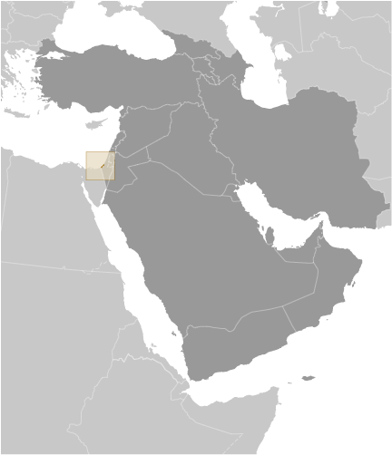
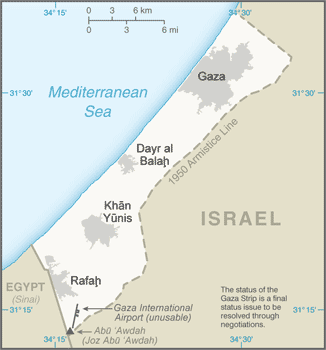
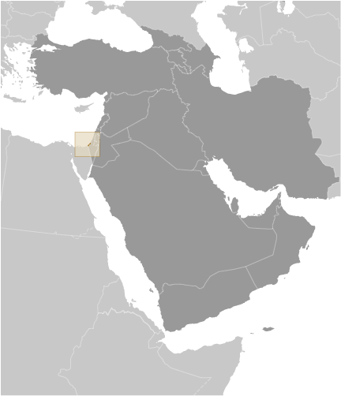
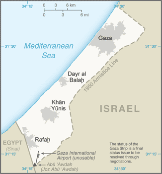

Middle East :: GAZA STRIP
Introduction :: GAZA STRIP
-
Inhabited since at least the 15th century B.C., Gaza has been dominated by many different peoples and empires throughout its history; it was incorporated into the Ottoman Empire in the early 16th century. Gaza fell to British forces during World War I, becoming a part of the British Mandate of Palestine. Following the 1948 Arab-Israeli War, Egypt administered the newly formed Gaza Strip; it was captured by Israel in the Six-Day War in 1967. Under a series of agreements signed between 1994 and 1999, Israel transferred to the Palestinian Authority (PA) security and civilian responsibility for many Palestinian-populated areas of the Gaza Strip as well as the West Bank. Negotiations to determine the permanent status of the West Bank and Gaza Strip stalled after the outbreak of an intifada in mid-2000.In early 2003, the "Quartet" of the US, EU, UN, and Russia, presented a roadmap to a final peace settlement by 2005, calling for two states - Israel and a democratic Palestine. Following Palestinian leader Yasir ARAFAT's death in late 2004 and the subsequent election of Mahmud ABBAS (head of the Fatah political party) as the PA president, Israel and the PA agreed to move the peace process forward. Israel in late 2005 unilaterally withdrew all of its settlers and soldiers and dismantled its military facilities in the Gaza Strip, but continues to control maritime, airspace, and other access. In early 2006, the Islamic Resistance Movement, HAMAS, won the Palestinian Legislative Council election, but attempts to form a unity government between Fatah and HAMAS failed, and violent clashes between Fatah and HAMAS supporters ensued, culminating in HAMAS's violent seizure of all military and governmental institutions in the Gaza Strip in June 2007. Fatah and HAMAS in May 2011 reached an agreement aimed at restoring political unity between Gaza and the West Bank, but struggled to implement it. In April 2014, the two factions signed another agreement and two months later President ABBAS formed an interim government of independent technocrats, none of whom were affiliated with HAMAS. In July 2014, HAMAS and other militant groups launched rockets into Israel that resulted in a 51-day conflict between Israel and militants in Gaza. An open-ended truce declared in late August 2014 continues to hold, despite the absence of a durable negotiated cease-fire and occasional truce violations. The status quo remains with HAMAS in control of the Gaza Strip and the PA governing the West Bank.
Geography :: GAZA STRIP
-
Middle East, bordering the Mediterranean Sea, between Egypt and Israel31 25 N, 34 20 EMiddle Easttotal: 360 sq kmland: 360 sq kmwater: 0 sq kmcountry comparison to the world: 206slightly more than twice the size of Washington, DCtotal: 72 kmborder countries (2): Egypt 13 km, Israel 59 km40 kmsee entry for Israelnote: effective 3 January 2009, the Gaza maritime area is closed to all maritime traffic and is under blockade imposed by Israeli Navy until further noticetemperate, mild winters, dry and warm to hot summersflat to rolling, sand- and dune-covered coastal plainlowest point: Mediterranean Sea 0 mhighest point: Abu 'Awdah (Joz Abu 'Awdah) 105 marable land, natural gas240 sq km; note - includes West Bank (2003)droughtsdesertification; salination of fresh water; sewage treatment; water-borne disease; soil degradation; depletion and contamination of underground water resourcesstrategic strip of land along Mideast-North African trade routes has experienced an incredibly turbulent history; the town of Gaza itself has been besieged countless times in its history; there are no Israeli settlements in the Gaza Strip; the Gaza Strip settlements were evacuated in 2005 (2014)
People and Society :: GAZA STRIP
-
noun: NAadjective: NAPalestinian ArabArabic, Hebrew (spoken by many Palestinians), English (widely understood)Muslim 98.0 - 99.0% (predominantly Sunni), Christian <1.0%, other, unaffiliated, unspecified <1.0%note: dismantlement of Israeli settlements was completed in September 2005; Gaza has had no Jewish population since then (2012 est.)1,869,055 (July 2015 est.)country comparison to the world: 1520-14 years: 42.75% (male 410,599/female 388,473)15-24 years: 20.34% (male 194,798/female 185,295)25-54 years: 30.66% (male 293,556/female 279,471)55-64 years: 3.59% (male 33,843/female 33,198)65 years and over: 2.67% (male 20,667/female 29,155) (2015 est.)total dependency ratio: 76%youth dependency ratio: 70.8%elderly dependency ratio: 5.2%potential support ratio: 19.2%note: data represents Gaza and the West Bank (2015 est.)total: 18.2 yearsmale: 18 yearsfemale: 18.4 years (2014 est.)2.81% (2015 est.)country comparison to the world: 1331.11 births/1,000 population (2015 est.)country comparison to the world: 353.04 deaths/1,000 population (2015 est.)country comparison to the world: 2200 migrant(s)/1,000 population (2015 est.)country comparison to the world: 95urban population: 75.3% of total population (2015)rate of urbanization: 2.81% annual rate of change (2005-10 est.)note: data represents Gaza Strip and West Bankat birth: 1.06 male(s)/female0-14 years: 1.06 male(s)/female15-24 years: 1.05 male(s)/female25-54 years: 1.05 male(s)/female55-64 years: 1.02 male(s)/female65 years and over: 0.71 male(s)/femaletotal population: 1.04 male(s)/female (2015 est.)total: 14.94 deaths/1,000 live birthsmale: 15.97 deaths/1,000 live birthsfemale: 13.86 deaths/1,000 live births (2015 est.)country comparison to the world: 105total population: 74.87 yearsmale: 73.11 yearsfemale: 76.74 years (2015 est.)country comparison to the world: 1104.08 children born/woman (2015 est.)country comparison to the world: 3452.5% (includes Gaza Strip and the West Bank) (2010)2.1 physicians/1,000 population (2013)1.3 beds/1,000 population (2010)improved:urban: 50.7% of populationrural: 81.5% of populationtotal: 58.4% of populationunimproved:urban: 49.3% of populationrural: 18.5% of populationtotal: 41.6% of populationnote: includes Gaza and the West Bank (2015 est.)improved:urban: 93% of populationrural: 90.2% of populationtotal: 92.3% of populationunimproved:urban: 7% of populationrural: 9.8% of populationtotal: 7.7% of populationnote: includes Gaza and the West Bank (2015 est.)NANANAdefinition: age 15 and over can read and writetotal population: 96.5%male: 98.4%female: 94.5%note: estimates are for the Palestinian Territories (2015 est.)total: 13 yearsmale: 12 yearsfemale: 14 yearsnote: data represents Gaza and West Bank (2013)total: 38.8%male: 34.5%female: 62.2%note: includes West Bank (2012 est.)country comparison to the world: 14
Government :: GAZA STRIP
-
conventional long form: noneconventional short form: Gaza Striplocal long form: nonelocal short form: Qita' Ghazzah
Economy :: GAZA STRIP
-
Israeli security controls imposed since the end of the second intifada have degraded economic conditions in the Gaza Strip, the smaller of the two areas comprising the Palestinian territories. Israeli-imposed border closures, which became more restrictive after HAMAS seized control of the territory in June 2007, have resulted in high unemployment, elevated poverty rates, and a sharp contraction of the private sector that had relied primarily on export markets. Egyptian authorities began a crackdown on Gaza’s extensive tunnel-based smuggling network in 2013, creating fuel, construction material, and consumer goods shortages in the territory. Israel’s military operation in Gaza from July to August 2014 - the latest in a series of periodic conflicts between Israel and Gaza-based Palestinian militants -destroyed one-fifth of the territory’s industrial infrastructure, displaced more than 100,000 people, and left 30% of households without access to potable water. Since the conflict, Israel has allowed limited Gaza exports and relaxed some restrictions on construction material imports to assist reconstruction efforts, but the Palestinian Authority will depend on donor and humanitarian aid to finance the $4billion needed to rebuild.see entry for West Bank-15% (2014 est.)6% (2013 est.)7% (2012 est.)note: data exclude West Bankcountry comparison to the world: 221see entry for West Bankdata exclude West Bank (2014 est.)5.7%16.9%77.4%note: data exclude West Bank (2014 est.)olives, fruit, vegetables, flowers; beef, dairy productstextiles, food processing, furnituresee entry for West Bank1.066 million (2014 est.)country comparison to the world: 141agriculture: 8.4%industry: 12.3%services: 79.3%note: data exclude West Bank (2013 est.)45.1% (2014 est.)29.5% (2013 est.)note: data exclude West Bankcountry comparison to the world: 19439%note: data exclude West Bank (2011 est.)see entry for West Bankcalendar yearsee entry for West Banksee entry for West Banksee entry for West Bank$2.356 billion (31 December 2014 est.)$2.16 billion (31 December 2013 est.)country comparison to the world: 147$1.317 billion (31 December 2014 est.)$1.168 billion (31 December 2013 est.)country comparison to the world: 152see entry for West Banksee entry for West Bankstrawberries, carnations, vegetables, fish (small and irregular shipments, as permitted to transit the Israeli-controlled Kerem Shalom crossing)see entry for West Bankfood, consumer goods, fuelsee entry for West Banksee entry for West Bank
Energy :: GAZA STRIP
-
51,000 kWh (2011 est.)country comparison to the world: 219202,000 kWh (2009)country comparison to the world: 2180 kWh (2011 est.)country comparison to the world: 150193,000 kWh (2011 est.)country comparison to the world: 1100 bbl (1 January 2010 est.)country comparison to the world: 143
Communications :: GAZA STRIP
-
403,118 (includes West Bank) (2014 est.)total: 3,197,550 (includes West Bank)subscriptions per 100 inhabitants: 117 (includes West Bank) (2014 est.)general assessment: Gaza continues to repair the damage to its telecommunications infrastructure caused by fighting in 2009domestic: Israeli company BEZEK and the Palestinian company PALTEL are responsible for fixed-line services; the Palestinian JAWWAL company provides cellular servicesinternational: country code - 970 (2009)1 TV station and about 10 radio stations; satellite TV accessible (2008)AM 0, FM 10, shortwave 0 (2008)1 (2008).ps; note - same as West Banktotal: 1,379,000 (includes West Bank)percent of population: 34.4% (includes West Bank) (2009)
Transportation :: GAZA STRIP
-
1 (2013)country comparison to the world: 219total: 1over 3,047 m: 1 (2013)1 (2013)note: see entry for West Bankmajor seaport(s): Gaza
Military :: GAZA STRIP
-
Hamas does not have a conventional military in the Gaza Strip, but maintains security forces in addition to its military wing, the 'Izz al-Din al-Qassam Brigades; the military wing reports to the external Hamas Political Bureau leadership, which has been in exile in Cairo and Doha since closing its Damascus headquarters in late 2011 (2013)males age 16-49: 385,961 (2010 est.)males age 16-49: 335,820females age 16-49: 319,847 (2010 est.)male: 18,805female: 17,903 (2010 est.)
Transnational Issues :: GAZA STRIP
-
the status of the Gaza Strip is a final status issue to be resolved through negotiations; Israel removed settlers and military personnel from Gaza Strip in August 2005refugees (country of origin): 1,258,559 (Palestinian refugees (UNRWA)) (2014)IDPs: at least 263,500 (includes persons displaced within the Gaza strip due to the intensification of the Israeli-Palestinian conflict since June 2014 and other Palestinian IDPs in the Gaza Strip and West Bank who fled as long ago as 1967, although confirmed cumulative figures do not go back beyond 2006) (2015)